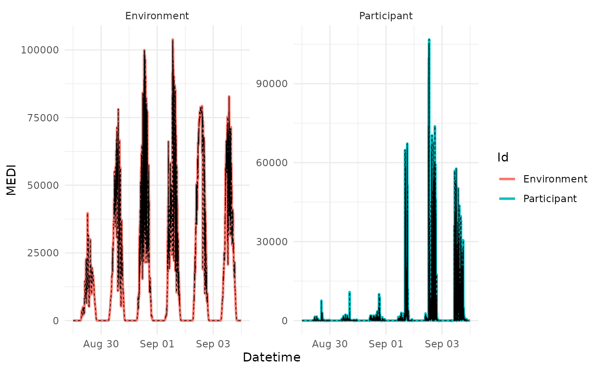
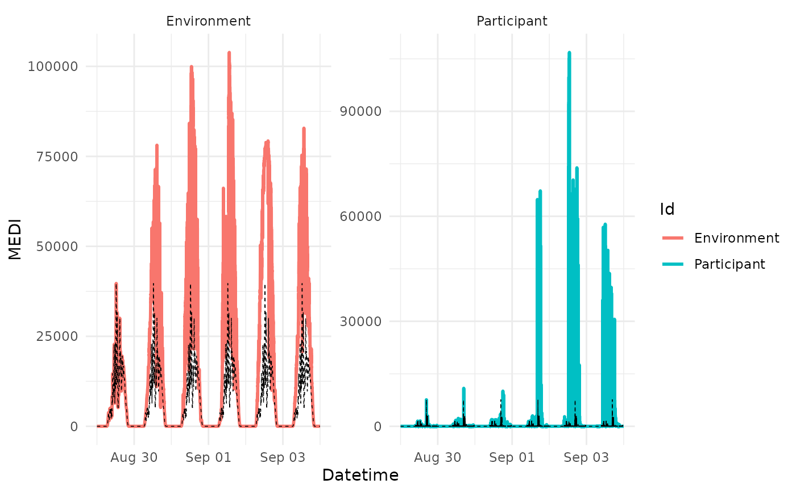
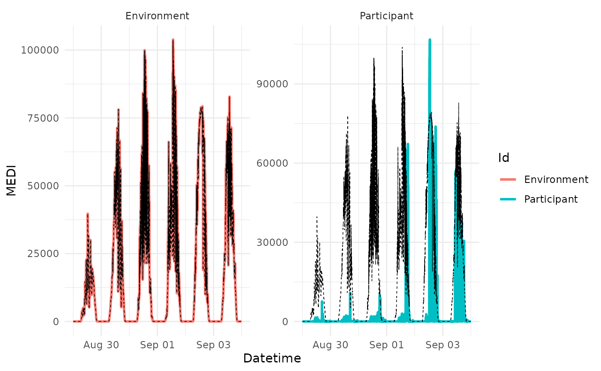

Create reference data from almost any other data that has a datetime column
and a data column. The reference data can even be created from subsets of the
same data. Examples are that one participant can be used as a reference for
all other participants, or that the first (second,...) day of every
participant data is the reference for any other day. This function needs to
be carefully handled, when the reference data time intervals are shorter than
the data time intervals. In that case, use aggregate_Datetime() on the
reference data beforehand to lenghten the inteval.
Usage
data2reference(
dataset,
Reference.data = dataset,
Datetime.column = Datetime,
Data.column = MEDI,
Id.column = Id,
Reference.column = Reference,
overwrite = FALSE,
filter.expression.reference = NULL,
across.id = FALSE,
shift.start = FALSE,
length.restriction.seconds = 60,
shift.intervals = "auto",
Reference.label = NULL
)Arguments
- dataset
A light logger dataset
- Reference.data
The data that should be used as reference. By default the
datasetwill be used as reference.- Datetime.column
Datetime column of the
datasetandReference.data. Need to be the same in both sets. Default isDatetime.- Data.column
Data column in the
Reference.datathat is then converted to a reference. Default isMEDI.- Id.column
Name of the
Id.columnin both thedatasetand theReference.data.- Reference.column
Name of the reference column that will be added to the
dataset. Default isReference. Cannot be the same as any other column in thedatasetand will throw an error if it is.- overwrite
If
TRUE(defaults toFALSE), the function will overwrite theReference.colnamecolumn if it already exists.- filter.expression.reference
Expression that is used to filter the
Reference.databefore it is used as reference. Default isNULL. See- across.id
Grouping variables that should be ignored when creating the reference data. Default is
FALSE. IfTRUE, all grouping variables are ignored. IfFALSE, no grouping variables are ignored. If a vector of grouping variables is given, these are ignored.- shift.start
If
TRUE, the reference data is shifted to the start of the respective group. Default isFALSE. The shift ignores the groups specified inacross.id.- length.restriction.seconds
Restricts the application of reference data to a maximum length in seconds. Default is
60seconds. This is useful to avoid reference data being applied to long periods of time, e.g., when there are gaps in the reference data- shift.intervals
Time shift in seconds, that is applied to every data point in the reference data. Default is
"auto". If"auto", the shift is calculated by halving the most frequent time difference between two data points in the reference data. If a number is given, this number in seconds is used as the shift. Can also uselubridate::duration()to specify the shift.- Reference.label
Label that is added to the reference data. If
NULL, no label is added.
Details
To use subsets of data, use the filter.expression.reference argument to
specify the subsets of data. The across.id argument specifies whether the
reference data should be used across all or some grouping variables (e.g.,
across participants). The shift.start argument enables a shift of the
reference data start time to the start of the respective group.
and @examples for more information. The expression is evaluated
within dplyr::filter().
Examples
library(dplyr)
#>
#> Attaching package: ‘dplyr’
#> The following objects are masked from ‘package:stats’:
#>
#> filter, lag
#> The following objects are masked from ‘package:base’:
#>
#> intersect, setdiff, setequal, union
library(lubridate)
#>
#> Attaching package: ‘lubridate’
#> The following objects are masked from ‘package:base’:
#>
#> date, intersect, setdiff, union
library(ggplot2)
gg_reference <- function(dataset) {
dataset %>%
ggplot(aes(x = Datetime, y = MEDI, color = Id)) +
geom_line(linewidth = 1) +
geom_line(aes(y = Reference), color = "black", size = 0.25, linetype = "dashed") +
theme_minimal() + facet_wrap(~ Id, scales = "free_y")
}
#in this example, each data point is its own reference
sample.data.environment %>%
data2reference() %>%
gg_reference()
#> Warning: Using `size` aesthetic for lines was deprecated in ggplot2 3.4.0.
#> ℹ Please use `linewidth` instead.

#in this example, the first day of each ID is the reference for the other days
#this requires grouping of the Data by Day, which is then specified in across.id
#also, shift.start needs to be set to TRUE, to shift the reference data to the
#start of the groupings
sample.data.environment %>% group_by(Id, Day = as_date(Datetime)) %>%
data2reference(
filter.expression.reference = as_date(Datetime) == min(as_date(Datetime)),
shift.start = TRUE,
across.id = "Day") %>%
gg_reference()
#> Joining with `by = join_by(Id, Day)`
#> Adding missing grouping variables: `Id`
#> Joining with `by = join_by(Id)`
#> Joining with `by = join_by(Id, Day)`
#> Joining with `by = join_by(Id, Day)`
#> Adding missing grouping variables: `Day`

#in this example, the Environment Data will be used as a reference
sample.data.environment %>%
data2reference(
filter.expression.reference = Id == "Environment",
across.id = TRUE) %>%
gg_reference()
